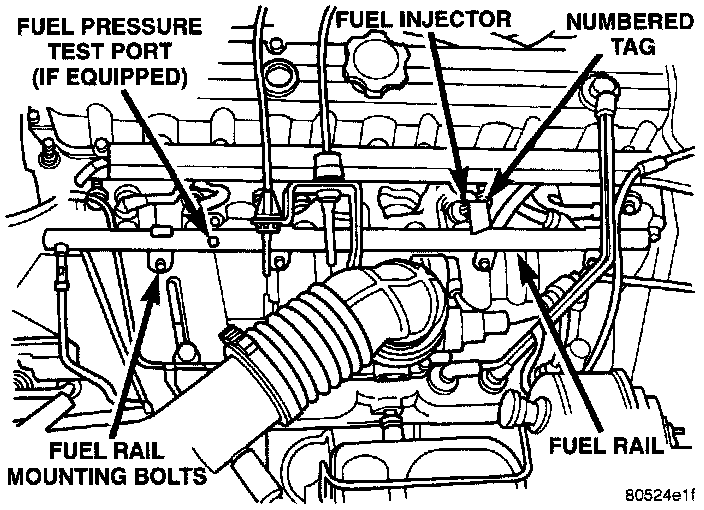

Fuel Injectors
FUEL INJECTORS4.0L ENGINE-PCM OUTPUTFig. 16 Fuel Injectors:

Six individual fuel injectors are used with this engine. The injectors are attached to the fuel rail.
The nozzle ends of the injectors are positioned into openings in the intake manifold just above the intake valve ports of the cylinder head. The engine wiring harness connector for each fuel injector is equipped with an attached numerical tag (INJ 1, INJ 2 etc.). This is used to identify each fuel injector.
The injectors are energized individually in a sequential order by the Powertrain Control Module (PCM). The PCM will adjust injector pulse width by switching the ground path to each individual injector on and off. Injector pulse width is the period of time that the injector is energized. The PCM will adjust injector pulse width based on various inputs it receives.
During start up, battery voltage is supplied to the injectors through the ASD relay. When the engine is operating, voltage is supplied by the charging system. The PCM determines injector pulse width based on various inputs.